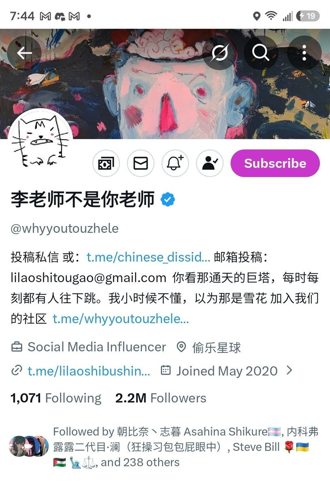

Wesley10032
@Wesley10032
@KawawaDiana8964 @whyyoutouzhele 90，之前转载过我学校喊楼说是“反抗暴政”，实际上只是那天没开空调……

蓝蓝🫐然然浪浪(🏳️🌈🐻🤚🏻 Di Alan Chan)
@KawawaDiana8964
“君子惠而不费，劳而不怨，欲而不贪，泰而不骄，威而不猛”-论语·尧曰
早上好,以李÷的迷惑行为,大家应该对它的怨气应该积累了不少,今天我们好好批斗下这货
#中推有害垃圾评分
第三十四期
李老师不是你老师
@whyyoutouzhele (0-100分)
欢迎各路推友在评论区为其逆天指数打分并表示打分的原因，四天后见~ https://t.co/ScmRrGkVrw https://t.co/mrvl8SKa2m